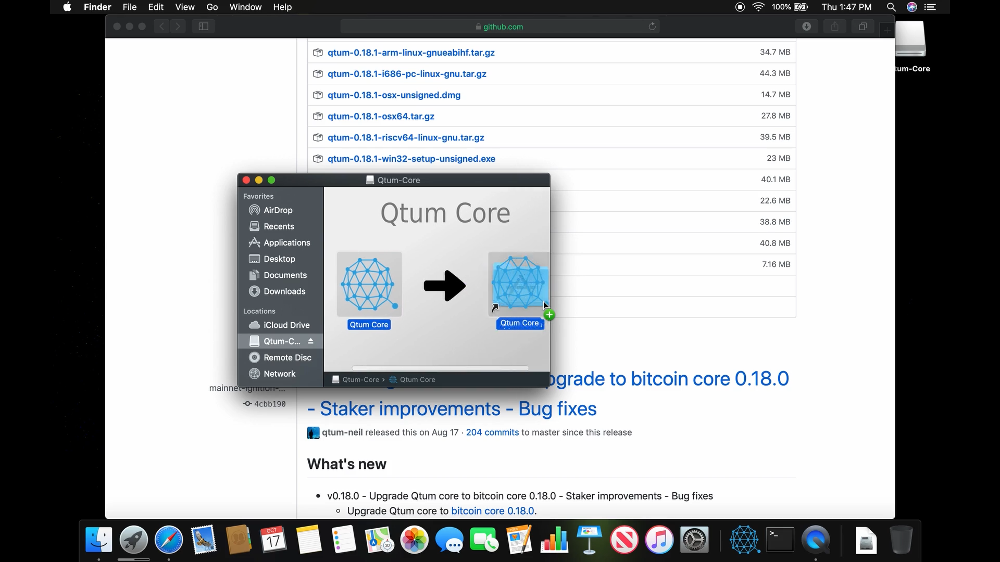
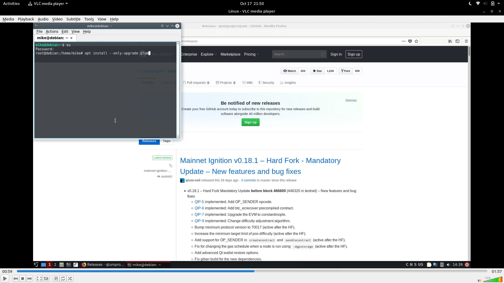

How to update your Qtum wallet
Updating your Qtum wallet is quite easy, however, this process changes depending on which operating system you're running, in this document we'll go over the following OS:
Windows
Mac OS
Linux
Keeping your Qtum wallet up-to-date is one of the most important tasks that any staker, holder, developer and any type of Qtum user must do.
The process itself is quite simple, however it does vary depending on the operating system you're using.
Update Qtum on Windows
Here's a video on how to update your Qtum wallet https://www.youtube.com/watch?v=pNsdGXYUfUc - you can use this document as support for the video.
In this example, we're running a 0.17.6 Qtum wallet version on Windows, it is outdated and won't be part of the hardfork, (we need to update ASAP).
However, if we're running the wallet (staking or just left it open), we need to do the following;
Close the wallet
Download latest Qtum wallet version from either one of these links: https://github.com/qtumproject/qtum/releases https://qtumeco.io/wallet

Once the installer finishes, launch the wallet

Voila! you've updated Qtum to the latest version available!
Update Qtum on Mac OS
Here's a video on how to update your Qtum wallet https://www.youtube.com/watch?v=7SB4o5IgJPg - you can use this document as support for the video.
In this example, we're running a 0.17.6 Qtum wallet version on Mac OS, it is outdated and won't be part of the hardfork, (we need to update ASAP).
Close the wallet
Download latest Qtum wallet version from either one of these links: https://github.com/qtumproject/qtum/releases https://qtumeco.io/wallet

Install the latest wallet using the Mac OS dmg

Once the upgrade finishes, launch the wallet

Voila! you've updated Qtum to the latest version available!
Update Qtum on Linux
Here's a video on how to update your Qtum wallet https://www.youtube.com/watch?v=58CL-c6ZQKw - you can use this document as support for the video.
In this example, we're running a 0.17.6 Qtum wallet version on Linux, it is outdated and won't be part of the hardfork, (we need to update ASAP).
Now, if you just open the wallet, it'll show this screen where it says the wallet is outdated and that we should update to latest version.
Close the wallet
If you're using Qtum Repo (recommended), all you have to do is either one of these:
Debian/Ubuntu/Mint
sudo apt update && sudo apt install --upgrade-only qtum
Once the package manager finishes upgrading, launch the wallet

Voila! you've updated Qtum to the latest version available!